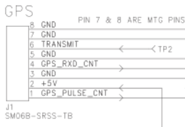

Installation guide of the Puck Series LiDAR (and HDL32)¶


This guide covers the installation procedure of Puck(VLP16), Puck LITE, Puck High-Res, Ultra Puck(VLP-32c) and HDL32. You can connect to the LiDAR via an interface box which is included in the package.
Since the interface box was first introduced with the HDL32 product line, this installation guide also works for HDL32 Lidars alongwith the following modification. However, please note that you would need to change the intrinsics for HDL32.
Mounting¶
A customized mounting structure(s) is required to successfully mount a Puck Series LiDAR on top of a vehicle. This structure must provide rigid support to the LiDAR system. If only one LiDAR is used in the system, the mount needs to raise the LiDAR to a certain height to avoid the laser beams being blocked by the vehicle’s body. If multiple LiDAR’s are to be installed, the mounting structure(s) needs to provide suitable LiDAR configurations including positioning and tilting of the LiDARs as required by your system. Please find the detailed tilt angle of each laser beam on the individual LiDAR’s manual when deciding the mounting of the LiDARs. Or you could also consult with Apollo engineers for the configurations that we have used and tested successfully.
Wiring¶
Connection to the Power Source
An AC/DC adapter with PJ-102A connector is provided to power the LiDAR. You can use it directly or make your own power cable to connect to your power source.
Connection to the IPC
Connect the interface box to the IPC using the ethernet cable provided in the cable bundle.
Connectionto the GPS
The LiDARs in the PUCK series require the recommended minimum specific GPS/Transit data (GPRMC) and Pulse Per Second (PPS) signal to synchronize to the GPS time. A customized connection is needed to establish the communication between the GPS receiver and the LiDAR. Please read your GPS manual for information on how to output those signals.
On the interface box, a GPS port (SM06B-SRSS-TB) is provided to send the GPS signals as an input to the LiDAR. The detailed pinout is shown in the image below. The GPRMC signal should be sent to GPS_RXD_CNT (pin4), while the PPS pulse train should be sent to GPS_PULSE_CNT. The ground of both signals should be shorted and sent to one of the GND pins.

Configuration¶
By default, the LiDAR has the network IP address of 192.168.0.201. However, when you setting up Apollo, you might need to change the IP address to 192.168.20.14.
Power the LiDAR and connect it to your laptop via an ethernet cable.
Configure your laptop’s IP address to be on the same network as the LiDAR
Open a web browser and connect to the LiDAR’s IP address. A webpage should show up in the browser.
Configure the IP address, Host, Gateway, port numbers on this webpage. Click on set for each change.
After the changes, click save config. Then, power cycle the LiDAR.
[Optional] Configure your laptop again to connect to the LiDAR (if IP changed) to confirm that the changes have taken effect.
[Optional] Installation of VLP-16 for Mapping¶
In Apollo 2.5, map creation service has been made available. To acquire the data necessary for map creation, you would need to install an additional VLP-16 LiDAR on the vehicle. The purpose of this LiDAR is to collect point cloud information for objects above the FOV of the HDL-64 S3 LiDAR, such as traffic lights and signs. It requires a customized rack to mount the VLP-16 LiDAR on top of the vehicle. The figure below shows one of the possible configurations.

In this specific configuration, the VLP-16 LiDAR is mounted with an upward tilt of 20±2°. The power cable of the VLP-16 is connected to the DataSpeed power panel. The ethernet connection is connected to the IPC (possibly through an ethernet switch). Similar to HDL-64E S3 LiDAR, the VLP-16’s GPRMC and PPS receive input from the same GPS receiver. Ideally, additional hardware should be installed to duplicate the GPRMC and PPS signals from the GPS receiver and sent to HDL-64 and VLP-16 respectively. However, a simple Y-split cable may also provide adequate signal for both LiDARs. To help distinguish from the HDL-64 S3 LiDAR, please follow the VLP-16 manual and use the webpage interface to configure the IP of VLP-16 to 192.168.20.14, its data port to 2369, and its telemetry port to 8309. The pinout for the signal input from GPS receiver can also be found in the manual if you need customized cable. Please connect the VLP-16 to the same network as the HDL-64E and configure the ethernet switch to do port forwarding.
References¶
For additional information, please refer to:
VLP - 16: http://velodynelidar.com/vlp-16.html
VLP - 32: http://velodynelidar.com/vlp-32c.html
VLP - 16 Hi-Res: http://velodynelidar.com/vlp-16-hi-res.html
VLP - 16 Lite: http://velodynelidar.com/vlp-16-lite.html
HDL - 32E: http://velodynelidar.com/hdl-32e.html
Disclaimer¶
This device is Apollo Hardware Development Platform Supported